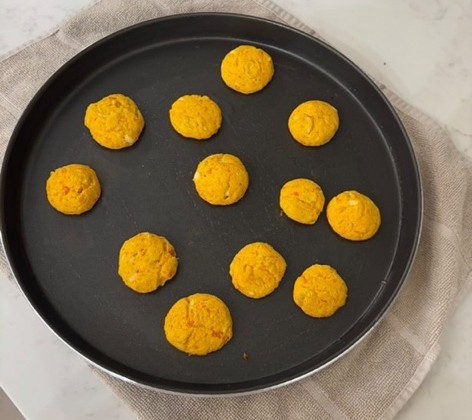

SMALL BITES
BITE TO YOUR FUTURE
OBJECTIVE
Our purpose with this product is to provide nutritions, accessible, and sustainable solutions that help reduce hunger in vulnerable communites through the production of Small Bites. Combating malnutrition and improving diets with its nutrient-rich content. We want to contribute globally to well-being by offering all these potential solutions and, in the future, achieving Zero Hunger.
Introduction
This is Small bitex, How can we reach zero hunger? Zero Hunger is the second goal of the United Nations Sustainable Development that is about creating a world free of hunger by 2030. Zero hunger has been alarmingly increased since 2015 thanks to a combination of factors including the pandemic, conflict, climate, change, and deepening inequalities. Extreme hunger and malnutrition remains a barrier to sustainable development and creates a maze from which people cannot easily escape.
Hunger leads to more diseases and less productive individuals. In the end this goal tries to end hunger all around the world, security and improved nutrition, and promote sustainable agriculture and food systems.
Recipe
First we start by putting 2 potatoes in boiling water, when ther are soft we peel them and mash them until they are mashed, we add salt and half an egg. Then we put oil on our hands and start making small balls with the dough. We beat beat an egg and put flour in 2 separate dishes and bathe them in those 2 ingridients. Then we put oil in a frying pan and add the balls until they fry and that´s it.
Our Team
Allison fraijo, Anna Zavala, Rebeca Nuñez, and Sophia Martinez.
We have a lot of aspirations for our future, we are planning to reduce the hunger in all the world with our product. The Small Bites is a sustainable meal solution designed to fight zero hunger by providing nutritius, affordable food made from climate-resilient ingridients. With future expansions in vertical farming, it aims to eradicte hunger by 2025.